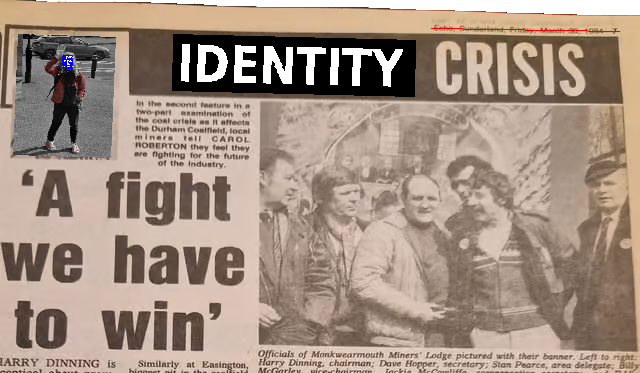
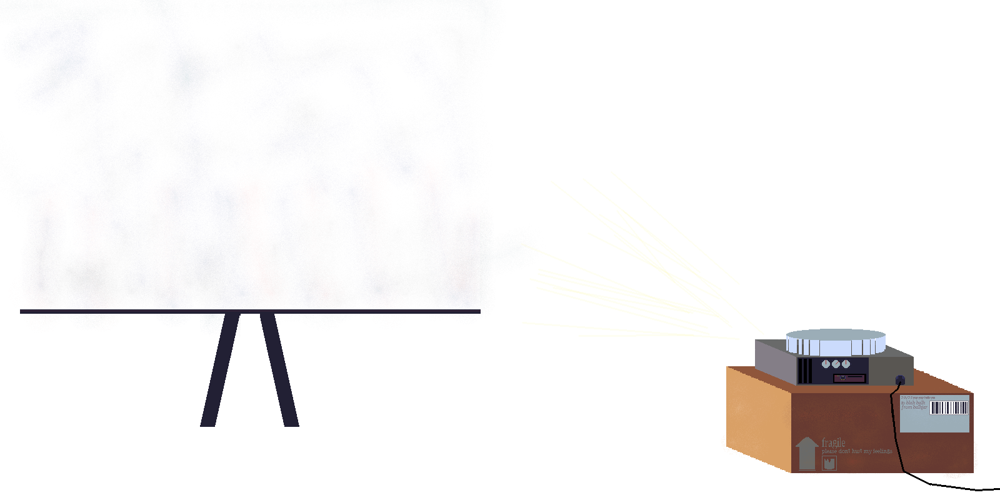
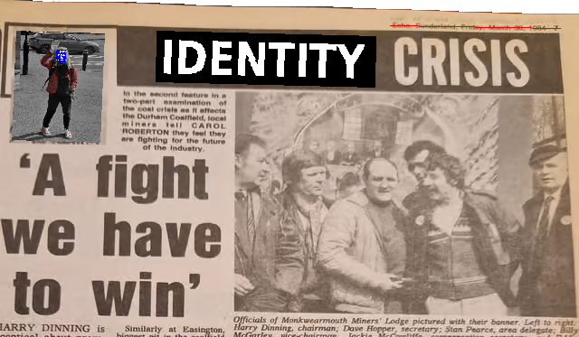
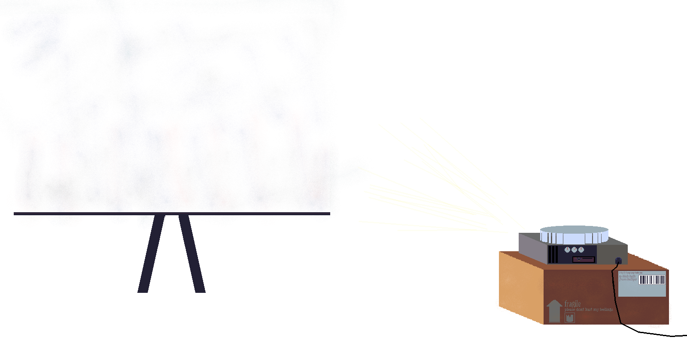
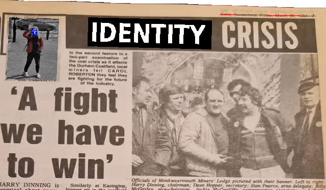
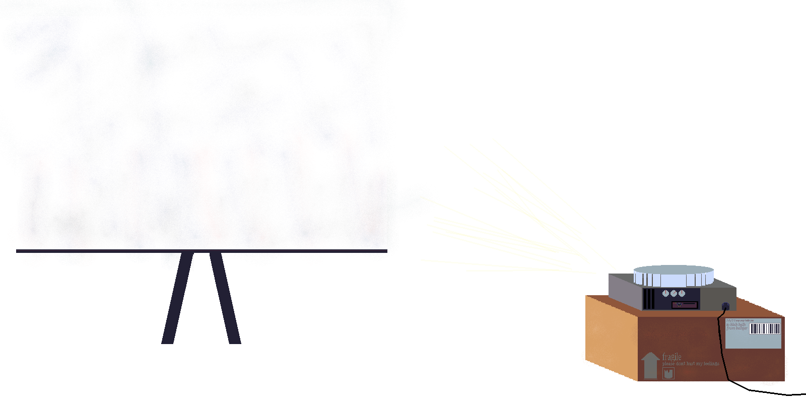
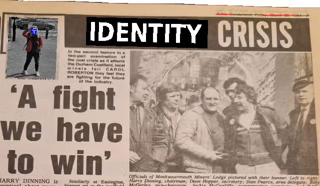
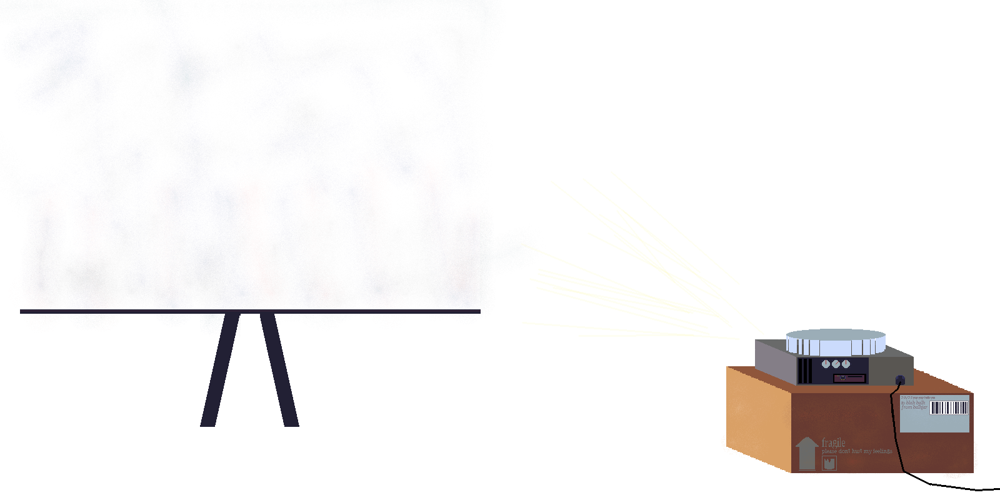

The base image for this was taken from a Google Street View camera and then passed through a black and white filter. I like to use publicly available cameras as they can often capture angles you can't often get yourself. In this case, Google was kind enough to already blur my face; however, I thought the blue (from the teletext palette) error screen-like overlay was better. The rest of the image was made with a spray paint brush, using the teletext palette at low opacity basically, fancy coloring in.
An interesting thought with this kind of photography is the OSINT angle, if I were to post the base image publicly, would there be any way to extract the location? There's no original metadata here and obviously, the image has been too significantly altered to reverse image search.
I create my own assets for projects, like this website, for two main reasons. Firstly, it adds a personal touch and simplifies the creation of interactive sections. Secondly, and often more importantly for certain assets, it prevents companies like Pixsy from making copyright claims.
While I believe the majority of my work is transformative enough to circumvent copyright due to significant alteration, I still create assets like the projector and telephone myself. This not only helps prevent automated copyright strikes but also ensures these element complement my art style.
...